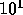
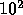
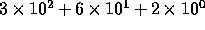
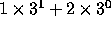

| What Base Is This? |
In positional notation we know the position of a digit indicates the weight of that digit toward the value of a number. For example, in the base 10 number 362 we know that 2 has the weight , 6 has the weight  , and 3 has the weight  , yielding the value  , or just 300 + 60 + 2. The same mechanism is used for numbers expressed in other bases. While most people assume the numbers they encounter everyday are expressed using base 10, we know that other bases are possible. In particular, the number 362 in base 9 or base 14 represents a totally different value than 362 in base 10.
For this problem your program will presented with a sequence of pairs of integers. Let’'s call the members of a pair X and Y. What your program is to do is determine the smallest base for X and the smallest base for Y (likely different from that for X) so that X and Y represent the same value.
Consider, for example, the integers 12 and 5. Certainly these are not equal if base 10 is used for each. But suppose 12 was a base 3 number and 5 was a base 6 number? 12 base 3 =  , or 5 base 10, and certainly 5 in any base is equal to 5 base 10. So 12 and 5 can be equal, if you select the right bases for each of them!
On each line of the input data there will be a pair of integers, X and Y, separated by one or more blanks; leading and trailing blanks may also appear on each line, are are to be ignored. The bases associated with X and Y will be between 1 and 36 (inclusive), and as noted above, need not be the same for X and Y. In representing these numbers the digits 0 through 9 have their usual decimal interpretations. The uppercase alphabetic characters A through Z represent digits with values 10 through 35, respectively.
For each pair of integers in the input display a message similar to those shown in the examples shown below. Of course if the two integers cannot be equal regardless of the assumed base for each, then print an appropriate message; a suitable illustration is given in the examples.
12 5
10 A
12 34
123 456
1 2
10 2
12 (base 3) = 5 (base 6) 10 (base 10) = A (base 11) 12 (base 17) = 34 (base 5) 123 is not equal to 456 in any base 2..36 1 is not equal to 2 in any base 2..36 10 (base 2) = 2 (base 3)